-
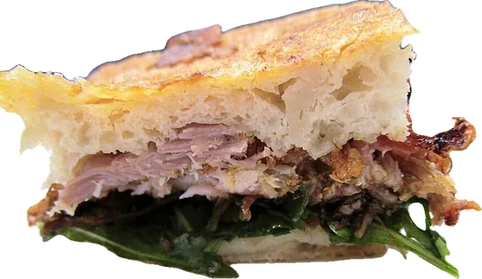
Container Serraglio 1
«Panino con porchetta di Ariccia» di RodzillaReviews web site, CC BY-SA 2.0
-
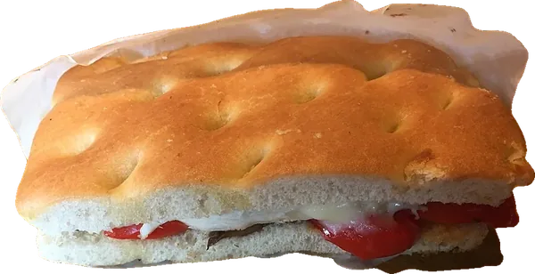
Container Serraglio 2
«Black truffle flavor chicken focaccia sandwich (1)» di François Nguyen, CC BY 2.0
-
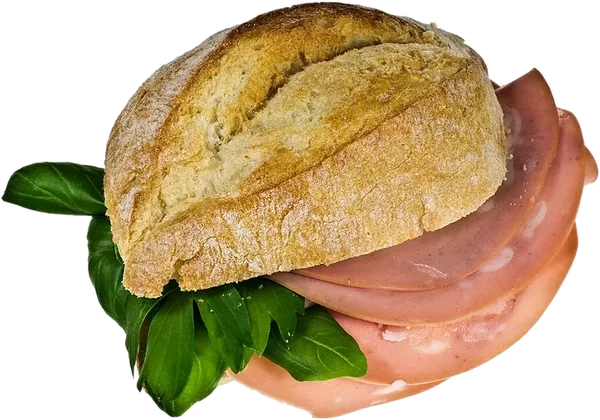
Almanacco 2
«Mortadella IMGP0978» di Nikodem Nijaki, CC BY-SA 3.0
-
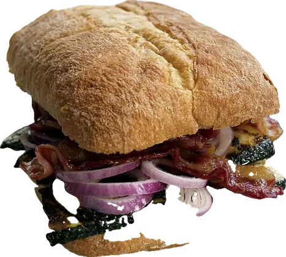
Playground 2
«Flickr - cyclonebill - Sandwich med bacon, rødløg og grillet squash» di cyclonebill, CC BY-SA 2.0
-
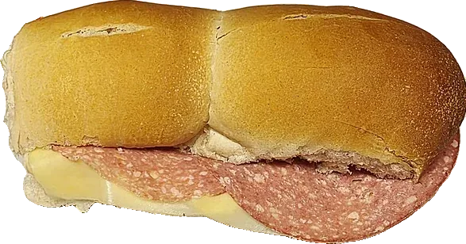
Bischero 2
«Sándwich argentino de salame y queso en pan miñón francés» di Horacio Cambeiro, CC BY-SA 3.0
-
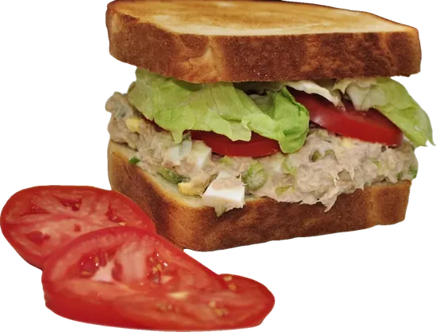
Bisenzio
«Tuna salad sandwich (1)» di jeffreyw, CC BY 2.0
-
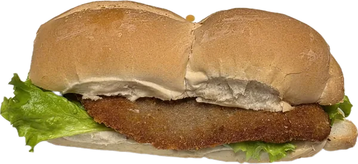
Panino con cotoletta
«Argentine style milanesa sandwich» di Horacio Cambeiro, CC BY-SA 3.0
-
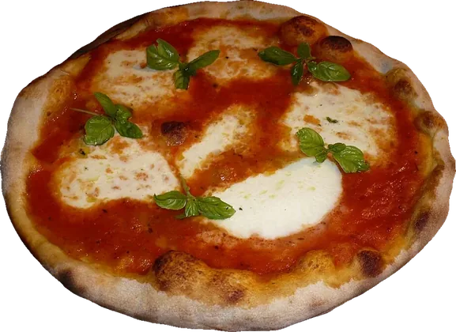
Pinsa Margherita
«Margherita Originale» di Mario56, CC BY-SA 3.0
-
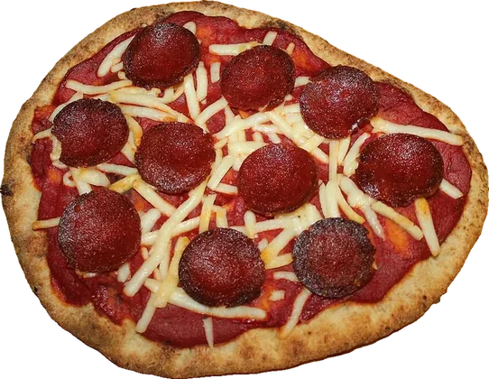
Pinsa Salamino piccante
«Vegan Pepperoni Naan Pizza» di Thriving Vegetarian, CC BY 2.0
-
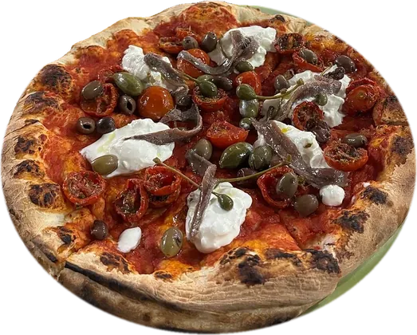
Pinsa Napoli
«Pizza with anchovies, caper, cherry tomatoes and strachiattella» di Robot8A, CC BY-SA 4.0
-
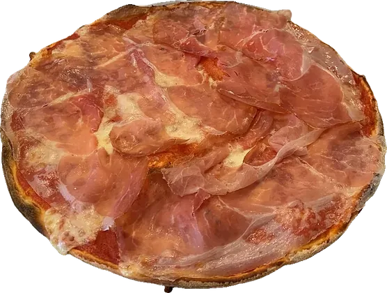
Pinsa Crudo
«Pizza Prosciutto Crudo» di Robot8A, CC BY-SA 4.0
-
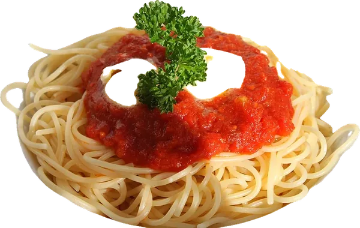
Primo piatto
«Spaghetti al Pomodoro» di Benreis, CC BY 3.0
Le altre immagini (hamburgher, hot dog, grigliata, panino e toast al cotto, pinsa al cotto) erano già nel progetto e non sono elencate qui.